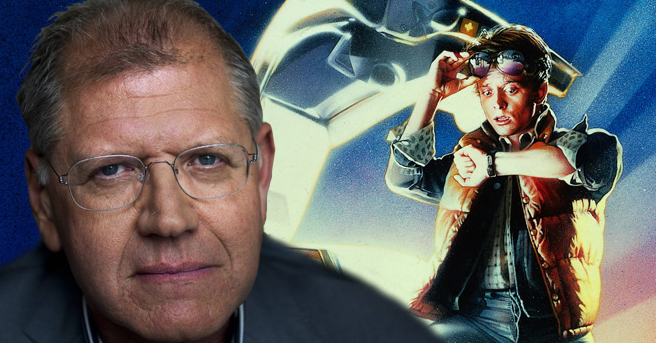

Back to the Future (titulada Regreso al futuro en España) es una película estadounidense de ciencia ficción y comedia de 1985 dirigida y escrita por Robert Zemeckis —Bob Gale también colaboró como guionista—, producida por Steven Spielberg y protagonizada por Michael J. Fox, Christopher Lloyd, Lea Thompson, Crispin Glover y Thomas F. Wilson.
Sinopsis
Relata las aventuras de Marty McFly, un adolescente rebelde e impulsivo que vive con sus padres y viaja accidentalmente al pasado desde 1985 su época, a 1955 la época en que sus padres se conocieron. Eventualmente, cambia los hechos específicos de la línea original de tiempo en que sus padres se conocieron y enamoraron. Debido a esto, Marty debe recurrir a la ayuda del Dr. Emmett Brown para reunir a sus padres de nuevo, asegurando su propia existencia y la de sus hermanos.
Reconocimientos
Tras su estreno, Back to the Future se convirtió en la película más exitosa de ese año, al recaudar más de 380 millones USD en todo el mundo y obtener críticas positivas en su gran mayoría, quienes elogiaron las actuaciones de Fox, Lloyd, Thompson, Glover y Wilson, el guion, la Banda Sonora de Silvestri, las canciones de Huey Lewis & The News, la dirección de Zemeckis, el maquillaje y los efectos visuales . Asimismo, se hizo acreedora a un premio Hugo en la categoría de «Mejor producción dramática» y un galardón Saturn como «Mejor película de ciencia ficción», además de recibir nominaciones a los premios Óscar y Globos de oro.
Trascendencia
En 1989, se lanzó un videojuego basado en la primera película desarrollado por Beam Software y distribuido por LJN para la consola NES (Nintendo Entertainment System). El juego fue criticado tanto por su jugabilidad como por el hecho de que no tenía demasiada relación con la película. Se hizo una secuela de este mismo juego ligeramente superior para la misma consola.